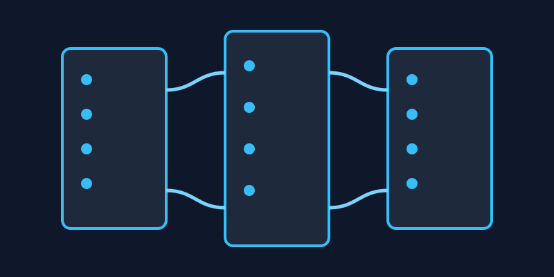

The Rise of Edge Computing

Edge computing pushes processing closer to where data is generated — on devices and local servers — instead of routing everything through a distant, centralized cloud. For latency-sensitive applications, that difference is starting to matter more than raw compute power.